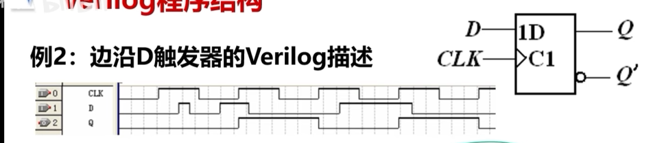
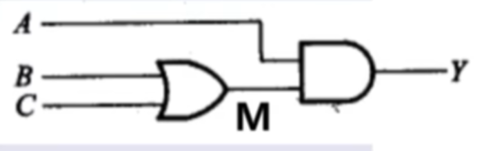

always语句块
always语句块又称过程块，always语句本身不是单一的有意义的一条语句，而是和下面的语句一起构成一个语句块，称之为过程块。过程块中的赋值语句称为过程赋值语句。
该语句不是总处于激活状态，当满足激活条件时才能被执行，否则被挂起，挂起时即时操作数有变化，也不执行赋值，赋值目标值保持不变。
赋值目标必须是reg型。always语句可以描述边沿变化，always语句中还可以使用if、case、for等循环语句。
基本格式：
1 | always @ (敏感信号条件表) |
举个例子吧。
1 | always @ (posedge CLK) |
激活条件由敏感信号条件表决定，当敏感条件满足时，过程块被激活。
敏感条件有两种，一种是边沿敏感，一种是电平敏感。
1、边沿敏感：
(posedge 信号名)，表示信号上升沿到来。
(negedge 信号名)，表示信号下降沿到来。
2、电平敏感：
(信号名列表)，表示信号列表中的任意一个信号有变化。（电平敏感的信号）
例如：(a,b,c)，当a，b，c中有一个发生变化，其中的逗号可以换成or，即可以写成(a or b or c)。
1 | always @ (D) |
举个例子：

1 | module dff(CLK,D,Q); |
always语句和assign语句区别
- 连续赋值语句assign总处于激活状态，只要操作数有变化马上进行计算和赋值。
- 过程赋值语句只有当激活该过程时，才会进行计算和赋值，如果不激活该过程，即时操作数发生变化也不会计算和赋值。
- assign的赋值目标必须是wire型，always的赋值目标必须是reg型。
- always语句中除了可以使用表达式赋值以外，还可以使用if，case等行为描述语句，能够描述边沿变化，功能比assign更加强大。
1 | module DFF2(CLK,D,Q,RST,EN); |
解释：当时钟信号CLK上升沿来临或者复位信号RST下降沿来临时，执行begin中的；begin…end中的是按顺序执行的。当RST=0，将Q置为0，当使能信号EN=1，将D的值赋给Q。
always语句块中如果有多条赋值语句必须将其用begin end包括起来，而assign语句中没有begin end。
1、阻塞赋值实质：
右边表达式的计算和对左边寄存器变量的赋值是一个统一的原子操作中的两个动作，这两个动作中不能再插入其他任何动作。如：赋值目标1=表达式1。
2、非阻塞赋值的实质：
首先按顺序计算右边表达式的值，但是并不马上赋值，而是要等到过程结束时再按顺序赋值。如：赋值目标1<=表达式1.
举例比较一下：
1 | //设A,B同时由0变为1，激活前：M1=0,M2=0,Q=0 |
设计组合电路时，常使用阻塞赋值；时序电路时，常使用非阻塞赋值，但是都不绝对。不建议在一个always语句中混合使用非阻塞赋值和阻塞赋值。
（1）阻塞赋值实现的组合电路

1 | module MU(A,B,C,Y); |
（2）非阻塞赋值实现的移位器
1 | module DDF(CLK,D,Q); |
（3）综合举例：4位二进制加法计数器
1 | module CNT4(CLK,Q); |
此程序中有always和assign两条语句，他们之间是并行的。